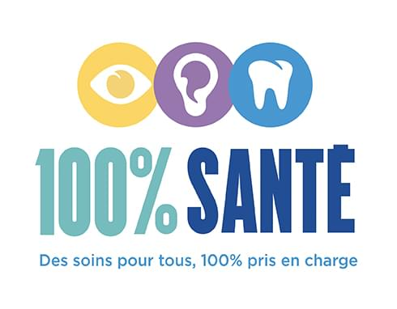
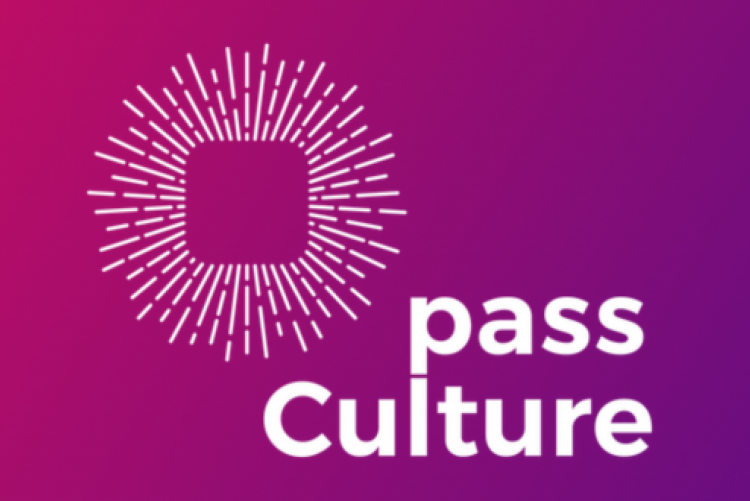

Création du 100 % Santé.
Initiateur politique :
Emmanuel Macron, à travers son programme présidentiel de 2017.
Mise en place :
de 2019 à 2021.
Objectif :
faciliter l'accès aux soins en supprimant le reste à charge sur certains équipements optiques, dentaires et auditifs.
Résultats :
augmentation du recours à des équipements intégralement remboursés, particulièrement dans les domaines dentaire et auditif.
Limites :
tous les équipements ne sont pas concernés et les bénéficiaires doivent remplir certaines conditions.

Création du pass Culture.
Initiateur politique
Emmanuel Macron, à travers son programme présidentiel de 2017.
Mise en place
Expérimentation en 2019, généralisation nationale en mai 2021 et extension aux jeunes de 15 à 17 ans en 2022.
Objectif
Faciliter l'accès des jeunes à la culture grâce à un crédit financé par l'État, permettant notamment d'acheter des livres, d'assister à des concerts, d'aller au cinéma ou de participer à des activités artistiques.
Résultats
Plus de 5 millions de jeunes bénéficiaires depuis son lancement, selon les chiffres communiqués en 2026 par le ministère de la Culture. Le dispositif a notamment favorisé l'achat de livres et l'accès à différentes offres culturelles.
Limites
Le dispositif représente un coût important pour l'État et ne supprime pas toutes les inégalités d'accès à la culture. Son efficacité pour encourager la découverte de nouvelles pratiques culturelles a également été discutée. Depuis mars 2025, le crédit attribué à 18 ans est passé de 300 € à 150 €.